Just another
creation of Allah
Growing up in a family with mix of maritime and bussiness background has makes a strong influence on me on important of education for success.

 >
>
About myself
A 19-year-old girl who always dreamt of being an adult, only to realize the harsh reality of being independent.And to the humble town that has always been home-Kuantan itself where I've dedicated my entire life, from crawling around the house to bittersweet moment of capturing of my last memory there as a 'teen'.I'm very clingy to my CLOSE friends,who bring out my talkative side.Always says "huh" after being asked, her brain just lags like an Internet explorer sometimes as my close friends said.
Education 1
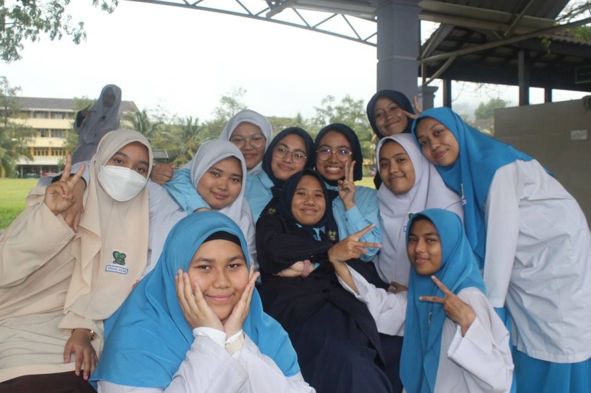 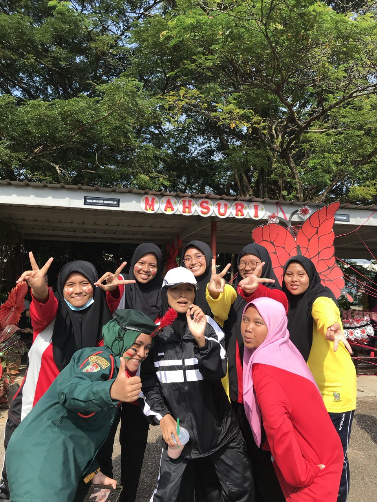
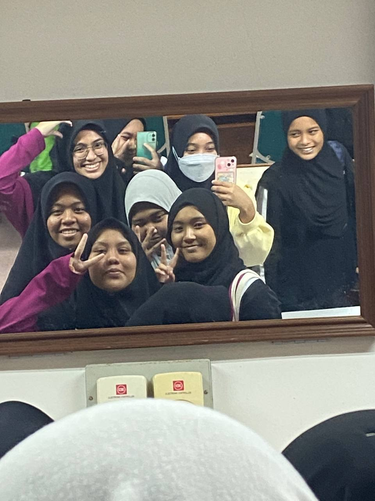
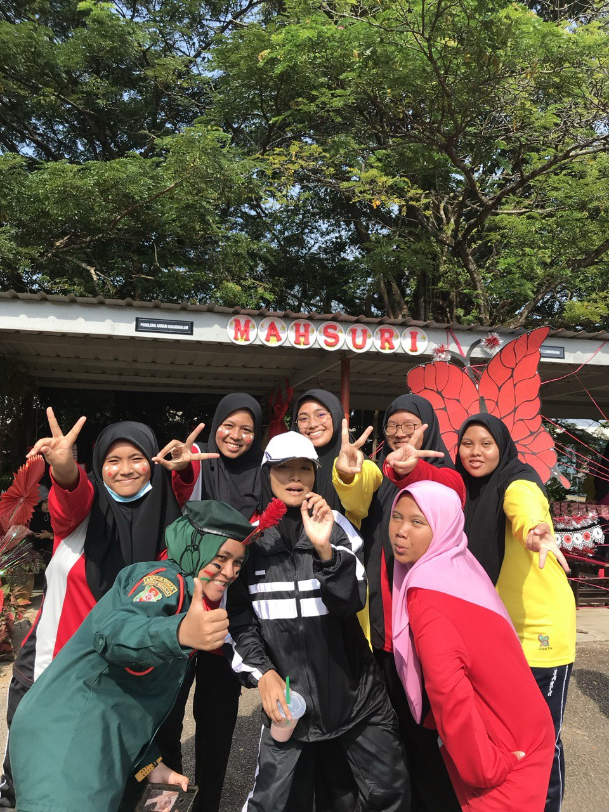
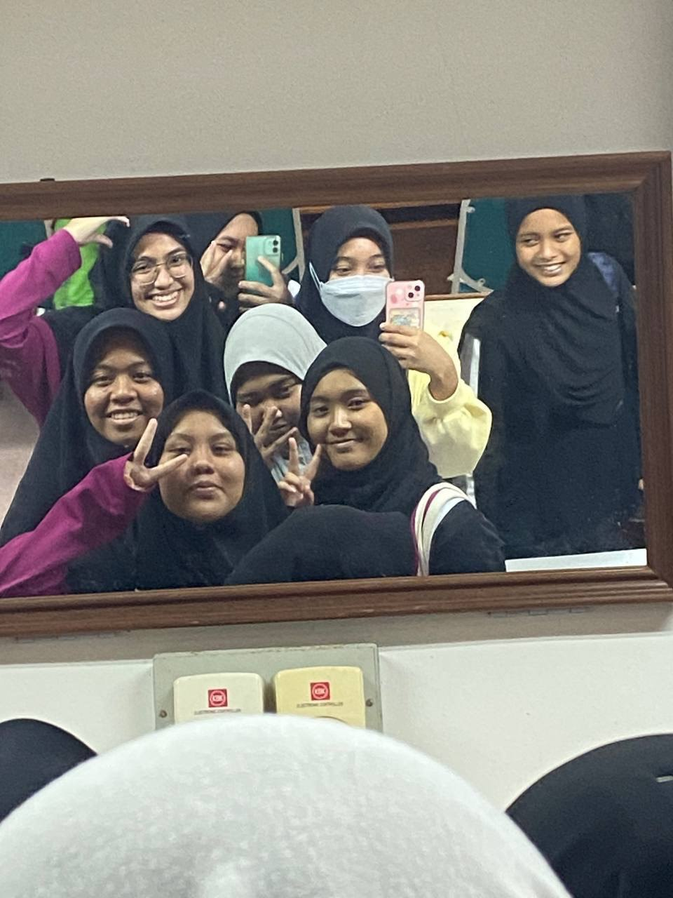
My education journey has been a path of growth and challenges, starting from primary school at Smk Assunta Convent and continuing to highschool which just one-minute drive from my primary school-Smk Tengku Afzan . Being in an all-girls schoole helps me in positively shape personal and academic growth as my school focus on female leadership which helps build our confidence and encourages girls to take on leadership roles.Deeper and long-lasting friendships also be formed in a supportive environment eventhough we all in different classes. An all-girls environment often known as 'safe space' where we feel free to express ourselves.
Education 2
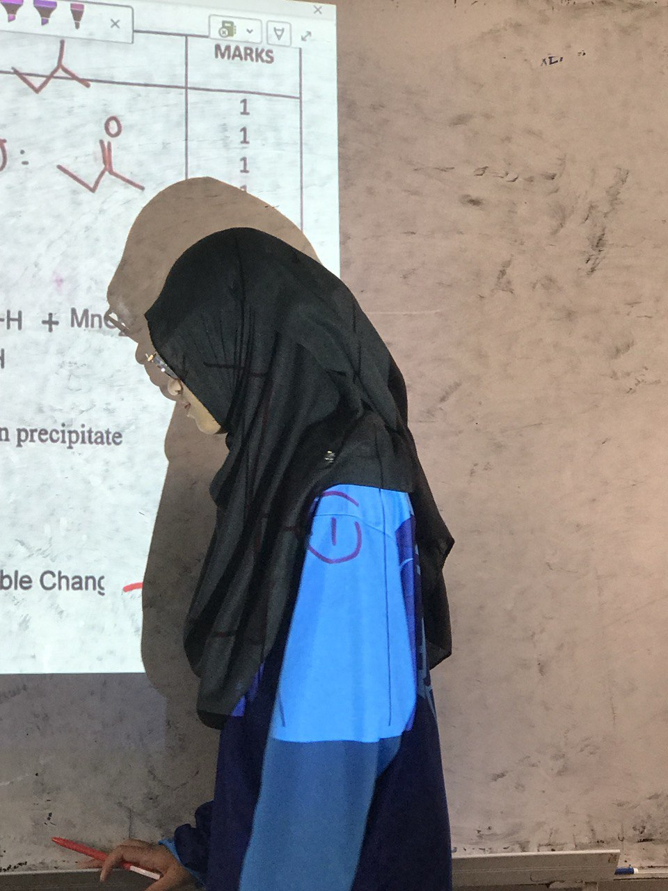 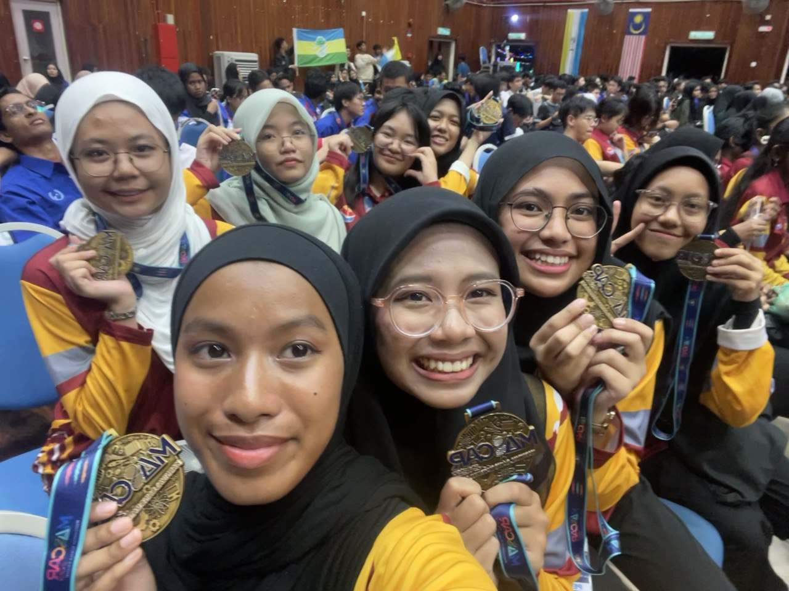
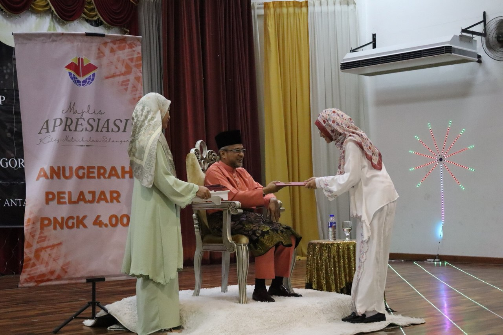
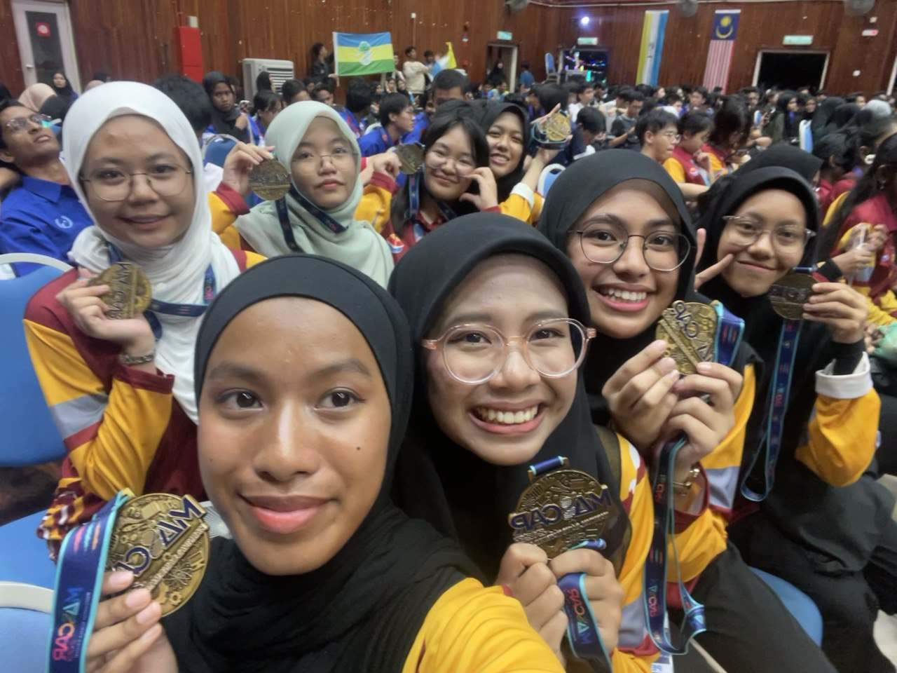
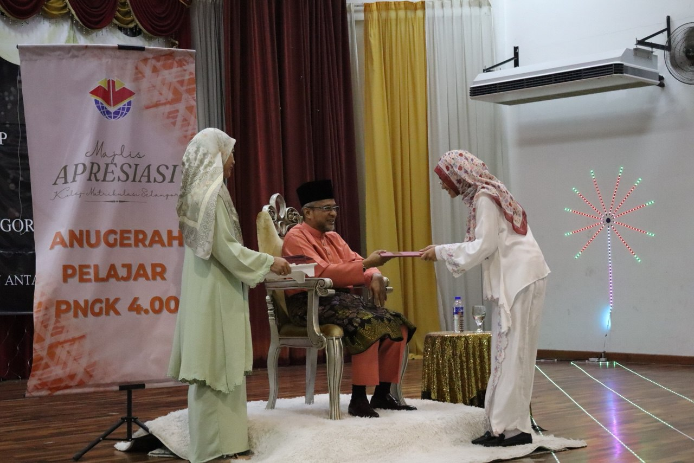
After finished my Sijil Pelajaran Malaysia(SPM), I got accepted into Selangor Matriculation College(KMS) and pursue Physical Science course. There were bittersweet and happy moments where I faced during my 10 months there. Alhamdulillah, Allah sent me good friends who helped me throughout my matriculation days. Gossiping in cafes, late-night studies, laughter and inside jokes becomes unforgettable memories.
Education 3
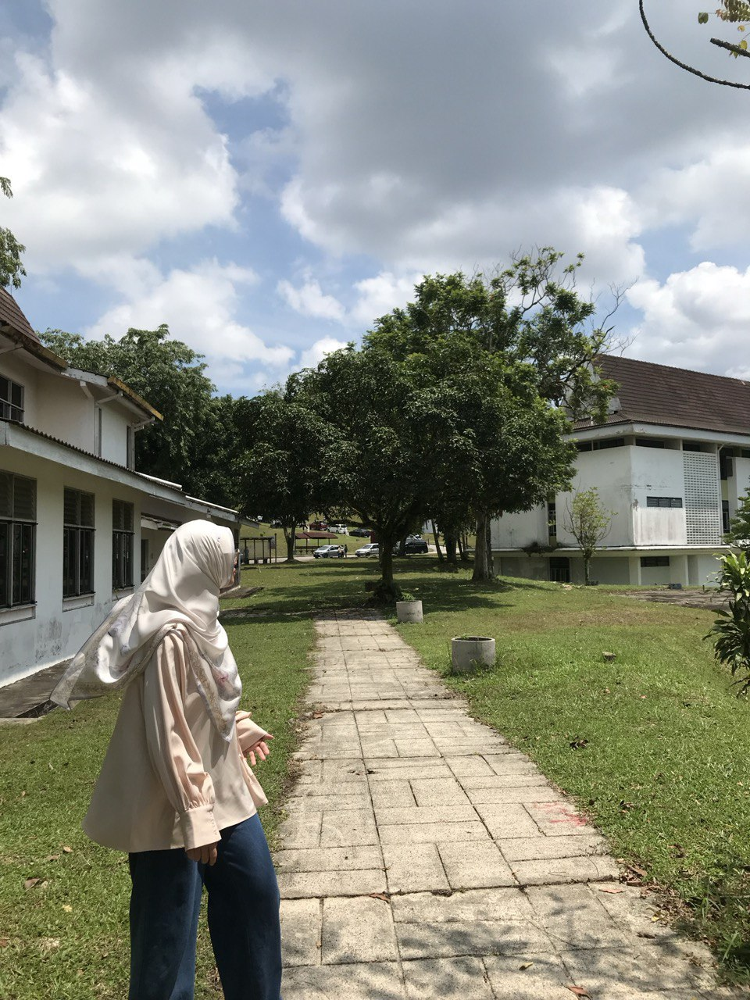
Now, I'm pursuing my studies in Bachelor of Computer Science(Data Engineering) with Honours at Univerisit Teknologi Malaysia